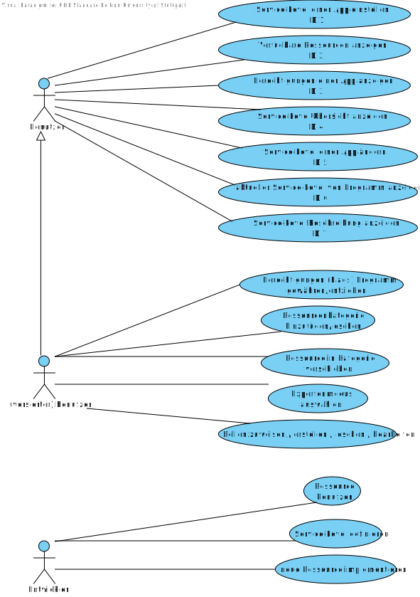

Versionshistorie
Version 2.0 (12.11.2011)
- Überarbeitung der Spezifiaktion für die zweite Iteration (Reviewkanidat)
Version 1.5 (18.08.2011)
- Korrektur nach Kunden-Review
Version 1.4 (17.08.2011)
- Verbesserungen nach Review eingearbeitet.
- Dies ist die erste Version für den Kunden.
Version 1.3 (15.08.2011)
- Reviewkandidat
Version 1.2 (14.08.2011)
- Hinzufügen des Kapitels "Benutzeroberfläche"
Version 1.1 (04.08.2011)
- Ausformulierungen einfacher Kapitel nach erstem Spezifikationsmeeting
Version 1.0 (24.07.2011)
- Erstes Gerüst der Spezifikationsvorlage
Einleitung
Zweck
Dieses Dokument stellt die Spezifikation des Projektes "Privacy Management Platform" dar. Es summiert die Ergebnisse der Analyse und repräsentiert die Grundlage für die spätere Entwicklung in einer Iteration. Es ist daher eine vertragliche Grundlage für Kunde und Entwickler, um die zu entstehende Software und ihre Funktionalität so ausführlich und vollständig wie möglich zu beschreiben, damit die weitere Entwicklung stets auf dieses Dokument zurückgreifen kann.
Die Spezifikation definiert dabei einen grafischen Prototypen für die spätere Benutzeroberfläche, beschreibt die gewünschten Funktionsabläufe und definiert im Begriffslexikon die Bedeutung von speziellen Begriffen, die in der Arbeitsumgebung verwendet werden. Da auch Begriffe neu definiert werden, um die Software möglichst knapp und für alle eindeutig zu beschreiben, empfiehlt es sich zunächst, einen Blick in das Begriffslexikon zu werfen und die Beschreibung vermeintlich klarer Begriffe dort nachzulesen.
Projektüberblick & Motivation
Die rasche Entwicklung in der Kommunikationsindustrie mit ihren unzähligen Möglichkeiten übersteigt die heutige Konfigurationssoftware. Nicht jeder kennt alle Anwendungen auf seinem Smartphone, ganz davon abgesehen welche Rechte die einzelnen Programme besitzen, ob diese auf den Internetanschluss zugreifen oder sogar Ihre E-Mails weiterleiten.
Im Rahmen des Studienprojekts "Privacy Management Platform" kurz "PMP" an der Universität Stuttgart wird eine Software entwickelt, die dem Benutzer das sichere Benutzen eines Android-Systems erlauben könnte.
Der Benutzer wird alle Apps und Ressourcen auf dem Android-System schnell und einfach verwalten können. Mittels einer ansprechenden grafischen Bedienungsoberfläche wird es möglich sein jeder einzelnen Anwendung, die mit PMP kompatibel ist, bestimmte Rechte zuzuweisen bzw. diese zu entziehen.
Leserkreis
Diese Spezifikation dient als zentrales Dokument für die folgenden Lesergruppen:
- den Entwicklern von PMP
- den Entwicklern von Androidapps bzw. zur PMP kompatiblen Ressourcen
- dem Kunden
- dem Betreuern des Studienprojekts
Konventionen
In diesem Dokument werden mehrere Konventionen verwendet, um knapp, übersichtlich, lesbar und treffend zu sein:
- Für Überbegriffe wie Benutzer oder Entwickler wird das generische Maskulinum verwendet. Da die Deutsche Sprache hier keine zufriedenstellende Alternative kennt, sind damit selbstverständlich auch alle weiblichen Leserinnen angesprochen.
- In diesem Dokument wird die deutsche Sprache verwendet; dabei ist allerdings zu beachten, dass sich übernommene oder übersetzte Begriffe aus dem Englischen nicht vermeiden lassen. Diese werden dann jedoch grammatikalisch an die Deutsche Sprache angepasst.
- Ein Verweis in diesem Dokument auf andere Kapitel wird so dargestellt:
- Die Versionsnummern sind nach dem Schema aufgebaut, dass zuerst die Iterationsnummer genannt wird und anschließend die Versionsnummer der Spezifikation in dieser Iteration. "3.2" bezeichnet z.B. die 2. Version der Spezifikation für die 3. Iteration.
Funktionale Anforderungen
Use-Cases
Diagramm
Anwendungsfälle
Im Folgenden werden die im Use-Case-Diagramm aufgeführten Anwendungsfälle ausformuliert.
Service Level anfragen
| Use-Case ID | #1 |
|---|---|
| Name | Service Level anfragen |
| Ziel | Die App will das Service Level von PMP erhalten. |
| Vorbedingungen |
|
| Nachbedingungen | Die App hat das Service Level von PMP erhalten. |
| Nachbedingungen bei Abbruch | Die App hat das Service Level von PMP erhalten, das keine Rechte erfordert. |
| Nachbedingungen im Sonderfall | Die App hat noch kein Service Level von PMP erhalten. |
| Akteure |
|
| Normalablauf |
Ablauf kann abgebrochen werden.
|
| Sonderfall 6a |
|
Ressource der PMP bekannt machen
| Use-Case ID | #2 |
|---|---|
| Name | Ressource der PMP bekannt machen |
| Ziel | Die App will eine Ressource der PMP bekannt machen. |
| Vorbedingungen |
|
| Nachbedingungen | Die Ressource ist der PMP bekannt. |
| Nachbedingungen im Sonderfall | Die Ressource ist nicht der PMP bekannt. |
| Akteure | App |
| Normalablauf |
|
| Sonderfall 2a |
|
Ressourcengruppen anzeigen
| Use-Case ID | #3 |
|---|---|
| Name | Ressourcengruppen anzeigen |
| Ziel | Der Benutzer möchte die Ressourcengruppen anzeigen. |
| Vorbedingungen |
|
| Nachbedingungen | PMP hat dem Benutzer die Ressourcengruppen angezeigt. |
| Akteure | Benutzer |
| Normalablauf |
|
Details zu einer Ressourcengruppe anzeigen
| Use-Case ID | #4 |
|---|---|
| Name | Details zu einer Ressourcengruppe anzeigen |
| Ziel | Der Benutzer möchte die Details über eine Ressourcengruppe anzeigen. |
| Vorbedingungen |
|
| Nachbedingungen | PMP hat dem Benutzer die Details zu einer Ressourcengruppe angezeigt. |
| Akteure | Benutzer |
| Normalablauf |
|
Apps anzeigen
| Use-Case ID | #5 |
|---|---|
| Name | Apps anzeigen |
| Ziel | Der Benutzer möchte die Apps anzeigen. |
| Vorbedingungen |
|
| Nachbedingungen | PMP hat dem Benutzer die Apps angezeigt. |
| Akteure | Benutzer |
| Normalablauf |
|
Service Levels einer App anzeigen
| Use-Case ID | #6 |
|---|---|
| Name | Service Levels einer App anzeigen |
| Ziel | Der Benutzer möchte die Service Levels einer App anzeigen |
| Vorbedingungen |
|
| Nachbedingungen | PMP hat dem Benutzer die Service Levels einer App angezeigt. |
| Akteure | Benutzer |
| Normalablauf |
|
Details zu einem Service Level einer App anzeigen
| Use-Case ID | #7 |
|---|---|
| Name | Details zu einem Service Level einer App anzeigen |
| Ziel | Der Benutzer möchte die Details zu einem Service Level einer App anzeigen. |
| Vorbedingungen |
|
| Nachbedingungen | PMP hat dem Benutzer die Details eines Service Levels einer App angezeigt. |
| Akteure | Benutzer |
| Normalablauf |
|
Rechte einer App auf Grundlage der Service Levels ändern
| Use-Case ID | #8 |
|---|---|
| Name | Rechte einer App auf Grundlage der Service Levels ändern |
| Ziel | Der Benutzer möchte das Service Level einer App ändern. |
| Vorbedingungen |
|
| Nachbedingungen | Der Benutzer hat das Service Level einer App geändert. |
| Nachbedingungen bei Abbruch | Der Benutzer hat das Service Level einer App nicht geändert. |
| Akteure | Benutzer |
| Normalablauf |
Ablauf kann abgebrochen werden.
|
Anforderungen an PMP
Oberfläche
Die Oberfläche von PMP wird sich nahtlos in die Oberfläche von Android einfügen. Dazu gehört eine konsistente und logische Anordnung der Bedienelemente genauso wie eine nachvollziehbare und möglichst einfache Menüstruktur. Es gelten die Android User Interface Guidelines, von denen nur in begründeten Einzelfällen abgewichen wird.
Import/Export
Es ist keine Import-/Exportfunktionen in der ersten Iteration geplant.
Standardeinstellungen
PMP wird ohne weitere Konfiguration sofort nach der Installation ("Out of the Box") einsatzbereit sein.
Sonstiges
- PMP wird eine zu installierende Ressourcengruppe nicht akzeptieren, wenn die von der Ressourcengruppe zu implementierenden Schnittstellen der PMP-API nicht vorhanden sind oder falsche bzw. inkompatible Werte zurück liefern. Selbiges gilt für das Installieren von Apps, die sich bei PMP registrieren.
- Innerhalb der PMP wird der bei Androidgeräten vorhandene "Zurück"-Button folgende Semantik erfüllen: Wird bei der aktuellen Bildschirmmaske der "Zurück"-Button betätigt, werden die gegebenfalls vorgenommen Einstellungen oder Modifikationen gespeichert, die Bildschirmmaske verlassen und die vorhergehenden Bildschirmmaske angezeigt.
Nicht-Funktionale Anforderungen
Bedienbarkeit
PMP wird von einem durchschnittlichen Android-Nutzer bedient werden können. Wo möglich, wird PMP gute Standardeingaben vorgeben und direkte Validierung über die Auswirkungen von Änderungen zur Verfügung stellen.
Der Benutzer wird entsprechende Warnungen erhalten, sobald er Aktionen durchführt die nicht oder nur schwer rückgängig gemacht werden können. Ungewollte Aktionen wird der Benutzer abbrechen können. Bei länger dauernden Aufgaben wird der Benutzer darüber in Kenntnis gesetzt.
Nutzungskontext
Personae
Der Durchschnittsuser: Joe
Joe ist 15 Jahre alt und besitzt sein Android Smartphone erst seit kurzem, er benutzt es vor allem um Statusupdates bei Facebook zu posten und zu spielen. Besonders gerne spielt er Klingonenschach. Er besitzt außerdem keine Internet-Flatrate und nur ein Gerät mit geringer Akkuleistung. Er hat jedoch gehört dass PMP ihm dabei helfen kann Strom zu sparen und auch Klingonenschach unterstützt seit neuestem PMP. Er benutzt also PMP ohne von Sicherheitskonzepten, Nutzerrollen oder Ressourcen eine Ahnung zu haben.
Zugehöriges Nutzungsszenario: N-1
| Die Durchschnittsnutzerin: Kathrin | |
|---|---|
| Kathrin ist 25 Jahre alt und besitzt ihr Android Smartphone seit 3 Jahren. Sie studiert im 5. Semester Geschichte und Deutsch auf Lehramt und hat generell kein Interesse an Technologie und Softwareentwicklung. Trotzdem nutzt sie einige Apps, die ihr den Alltag erleichtern. |  |
| Zugehöriges Nutzungsszenario: N-1 | |
| Der Expertennutzer: Moritz | |
|---|---|
| Moritz ist 28 Jahre alt, arbeitet an einer deutschen Universität als wissenschaftlicher Mitarbeiter im Bereich Elektrotechnik und besitzt sein Android Smartphone seit 4 Jahren. Er hat großes Interesse daran, dass seine installierten Apps keine unnötigen oder nicht von ihm gewollten Ressourcen nutzen. Weiterhin liebt Moritz feingranulare Konfigurationsmöglichkeiten. |  |
| Zugehöriges Nutzungsszenario: N-2 | |
Nutzungsszenarien
Nutzungsszenario N-1
Joe ist im Klingonenschach immer noch viel zu schlecht, er traut sich deshalb nicht seinen Highscore zu veröffentlichen. Beim ersten Starten des Schachprogramms und dem daraus folgendem Aktivieren der Service Features aktiviert er das Service Feature "Klingonenschach" (ohne Highscore) und lässt das Service Feature "Highscore übertragen" deaktiviert, womit er so die Speicherung seiner Highscore verhindert.
Nutzungsszenario N-1
Vor kurzem entdeckte Kathrin zufällig im Android-Marketplace eine zu PMP kompatible Kalender-App, die für ihre Bedürfnisse vollkommen ausreichend ist und ihre Kalendereinträge einfach und intuitiv verwalten kann. Nachdem ein Freund ihr von PMP erzählt hat, verwendet sie nun PMP um ihre Kalender-App zu konfigurieren. Zum Beispiel möchte sie auf keinen Fall, dass die Kalender-App die Möglichkeit bietet ihre Kalender-Einträge per E-Mail zu versenden. Aus diesem Grund deaktiviert sie das Service Feature "Einträge per E-Mail versenden", wodurch die Kalender-App keinen Zugriff auf die E-Mail-Ressourcengruppe erhält.
Nutzungsszenario N-2
Durch einen Kollegen erfuhr Moritz, dass seit kurzem die App PMP im Android-Marketplace verfügbar ist. Nachdem er PMP und die zu PMP kompatible Kalender-App heruntergeladen und installiert hatte, war er über die feingranularen Einstellungsmöglichkeiten erfreut. Moritz kann sich nun selbst Presets erstellen und definieren, auf welche Ressourcengruppen die Kalender-App Zugriff bekommt. Da er nicht möchte, dass die Kalender-App Zugriff auf die Dateisystem-Ressourcengruppe erhält, lässt er die zugehörigen Privacy Settings deaktiviert. Also Konsequenz seiner Restriktion ist das Service Feature "Kalendereinträge im- und exportieren" abgeschaltet, welches Moritz sowieso nicht nutzen möchte.
Quantitative Anforderungen
Leistungsanforderungen
PMP wird bei Verwendung eines Motorola Defy Smartphones Antwortzeiten von unter einer Sekunde aufweisen. Sollte eine Antwort länger andauern, wird der Benutzer durch eine Verarbeitungs- oder Fortschrittsanzeige in Kenntnis gesetzt.
Mengengerüst
Die Software wird ohne weitere Probleme mindestens 10 Apps mit jeweils 5 verschiedenen Service Features verwalten.
In der ersten Iteration wird eine Standard-Ressource bereitgestellt.
Eingabelängen
Es sind keine Benutzereingaben für die erste Iteration vorgesehen. Texte für Ressourcen-/Appbeschreibungen werden auf eine sinnvolle Länge begrenzt.
Robustheit
Die PMP stürtz bei der Installation von Ressourcengruppen oder Apps, die die PMP-API verwenden und fehlerhafte Schnittstellen aufweisen, nicht ab.
Verfügbarkeit
PMP läuft als Service während der gesamten Betriebszeit des Android-Systems.
Sicherheit
Es sind keine speziellen Sicherheitfeatures notwendig.
Portabilität & Kompatibilität
PMP wird zu allen Android-Systeme der Versionen 2.x (ab Version 2.1.1 aufwärts) kompatibel sein.
Internationalisierung
Die einzige verfügbare Sprache für PMP ist Englisch, die Oberfläche wird jedoch für beliebig viele Sprachen erweiterbar sein. Die Sprache des Handbuches ist Deutsch, wobei die Screenshots auf die englische Oberfläche verweisen werden.
Protokollierung
Eine Protokollierung aller wichtigen Systemereignisse, so dass Ausführungszeitpunkt, die ausgeführte Aktion und eventuelle Probleme registriert werden können, ist für die 3. Iteration geplant.
Installation
Im Handbuch wird eine genaue Beschreibung der Installation vorliegen.
Erweiterbarkeit
Die Software wird hinsichtlich folgender Punkte erweiterbar sein:
- Internationalisierung (bisher englische Benutzeroberfläche)
- Ressourcen/Ressourcengruppen
- Presets
- verwaltete Apps
Wartbarkeit
Es werden keine speziellen Anforderungen an die Wartbarkeit von PMP gestellt. Folgende allgemeine Anforderungen garantieren jedoch eine hohe Wartbarkeit von PMP:
- Es wird eine ausführliche Dokumentation des Sourcecodes in Form von (Javadoc-)Kommentaren erstellt.
- Die Software wird modular aufgebaut sein.
- Es werden allgemein bekannte und anerkannte Entwurfsmuster verwendet.
Abgeschlossenheit
PMP wird ohne externe Abhängigkeiten entwickelt.
Gesetzliche Einschränkungen
Es gibt keine generellen gesetzlichen Richtlinien oder Normen, die eingehalten werden müssen. Die Universität Stuttgart wird ein zeitlich und personell unbegrenztes Nutzungsrecht an der Software erhalten. PMP wird unter (mindestens) einer Open-Source Software Lizenz freigegeben werden.
Benutzeroberfläche
Hauptmenü

Startscreen der PMP.
Apps
Übersicht über alle Apps.

Auf diesem Screen werden alle Apps, die an PMP registriert sind, aufgelistet. Von jeder App werden ein Icon, Name und Beschreibung (gekürzt) angezeigt.
Mit einem langen Touch auf eine App wird nachfgolgendes Menü angezeigt. Ein kurzer Touch führt zum "App Details"-Screen.
Aktionsmenü für App

Es kann zwischen folgenden Aktionen gewählt werden:
Details anzeigen: Öffnet den "App Details"-Screen.
Service Features ändern: Öffnet den "Service Features ändern"-Screen.
Zugewiesene Presets anzeigen: Öffnet die der App zugewiesenen Presets (Nur Expertmode).
App entfernen: Entfernt die App aus PMP.
Details-Screen für App

Zu der App werden Name, Icon, Beschreibung und alle aktiven Service Features angezeigt.
Jedes aktive Service Feature wird mit Namen, und Icon angezeigt. Wird auf ein Service Feature getippt öffnet sich der "Service Feature Details"-Screen.
In der Fußzeile gibt es die Möglichkeit die Service Features zu ändern (Im Expert Mode nur anzeigen), dabei öffnet sich der "Service Features ändern"-Screen.
Außerderm gibt es einen Presets anzeigen Button, der die Übersicht über alle zugewiesenen Presets anzeigt. Der "App entfernen"-Button entfernt die App aus PMP.
Service Features
Im nachfolgenden könnnen Service Features nur dann geändert werden wenn der Expert-Mode nicht aktiviert ist.
Portrait-Modus

Im Portrait-Modus lassen sich alle Service Features die aktiviert sind anzeigen. Durch einen Fingerwisch nach links werden alle deaktivierten Service Features angezeigt. (Alternativ ein Touch auf "Deaktiviert" in der Button-Leiste über den Service Features.
Vor jedem Service Feature wird ein Icon des Features angezeigt (nicht in der Zeichnung enthalten).
In der Kopfzeile wird das App-Icon, der Name und "Service Features ändern" angezeigt.
Wird auf ein Service Feature getippt, werden im expandierten Modus alle Details zum Service Feature angezeigt.
Wird ein Service Feature aktiviert/deaktiviert, wechselt es in die andere Liste.
Die Änderungen werden erst am Schluss durch bestätigen gespeichert.
Landscape-Modus

Im Landscape-Modus lassen sich die Service Features durch wischen in die andere Liste (also aktivieren/deaktivieren) verschieben.
Ein Touch auf ein Service Feature öffnet den "Service Feature Details"-Screen.
Service Feature Details

Im Details-Screen der Service Features werden alle Details zum Service Feature angezeigt.
Über einen Button kann das Service Feature aktiviert/deaktiviert werden.
Presets
Presets sind nur im Expert-Mode verfügbar.
Presets Übersicht

Menü in der Preset-Übersicht

Detail-Ansicht für Presets

Menü für die Preset-Details-Ansicht

Privacy Setting hinzufügen - Schritt 1

Privacy Setting hinzufügen - Schritt 2
Ressourcengruppen
Installierte Ressourcengruppen

Verfügbare Ressourcengruppen

Ressourcengruppen laden

Ressourcengruppe Details

Ressourcengruppe installieren - Schritt 1

Ressourcengruppe installieren - Schritt 2&3

Einstellungen
Übersicht

Details

Begriffslexikon
App
| Begriff | App |
|---|---|
| Synonyme | Applikation |
| Bedeutung | Eine App ist eine lauffähige Software, die auf einem Android-System ausgeführt wird. Eine App definiert mindestens ein Service Feature, das mehrere Services enthalten kann. Eine App kann über eine Schnittstelle Ressourcengruppen über PMP benutzen. Eine App kann eigene Ressourcengruppen in die PMP einfügen. |
| Beispiele | Die Demo-Szenarien, die entwickelt werden, sind Apps. |
| Abgrenzung | Nicht unter den Begriff App fällt zur PMP inkompatible, nicht-ausführbare oder nicht-mobile Software. |
| Gültigkeit | Eine App erlangt Bedeutung für die PMP, sobald über sie Ressourcengruppen oder Kontexte importiert werden oder sie in PMP für Ressourcenzugriffe eingebunden wird. Die App wird wieder irrelevant, sobald der Import aufgehoben wird oder die App deinstalliert wird. |
| Bezeichnung | Eine App wird durch ihren Namen identifiziert und durch ihre Funktionalität beschrieben. |
| Unklarheiten | - |
| Querverweise | , , , |
Expert Mode
| Begriff | Expert Mode |
|---|---|
| Synonyme | Expertenmodus |
| Bedeutung | Der Expert Mode ist eine Darstellungsart der Optionen für den Benutzer der PMP. Dabei wird ihm maximale Freiheit der einzelnen Einstellungen bezüglich jeden Privacy Settings gelassen. Des Weiteren kann er diese Einstellungen kontext-sensitiv machen. |
| Beispiele | - |
| Abgrenzung | Der Expert Mode ist nicht der "normale", einfache Modus "Simple Mode". |
| Gültigkeit | - |
| Bezeichnung | Der Expert Mode ist einzigartig in der PMP. |
| Unklarheiten | - |
| Querverweise | , , |
Kontext
| Begriff | Kontext |
|---|---|
| Synonyme | - |
| Bedeutung | Ein Kontext ist ein Zustand einer in PMP eingebundenen, speziell gekennzeichneten Ressource. Von einem Kontext können einzelne Einstellungen der Presets und Privacy Setting abhängen. |
| Beispiele | Die Ressourcengruppe "GPS-Ortung" könnte einen Kontext "Aktuelle Geschwindigkeit beträgt weniger als 100 km/h" anbieten. |
| Abgrenzung | Ein Kontext ergibt sich nicht durch den Zustand der PMP. |
| Gültigkeit | Der Kontext bleibt gültig, solange die entsprechende Ressourcengruppe in PMP eingebunden ist. |
| Bezeichnung | Der Kontext wird durch die zugehörige Ressourcengruppe und seinen Namen eindeutig identifiziert. |
| Unklarheiten | - |
| Querverweise | , , , |
Preset
| Begriff | Preset |
|---|---|
| Synonyme | Rolle |
| Bedeutung | Ein Preset ist eine Zusammenfassung der konkreten Konfiguration einer Menge von Privacy Settings. Ein Preset kann kontext-abhängig sein. Ein Preset kann einer oder mehreren Apps zugewiesen werden. |
| Beispiele | Ein Preset könnte eine Zusammenfassung aller Lese-Rechte auf alle Datenbanken sein. |
| Abgrenzung | Ein Preset ist nicht nur eine Zusammenfassung einer Menge von Privacy Settings. Ein Preset ist keine feststehende Bezeichnung für eine App. |
| Gültigkeit | Das Preset bleibt gültig, solange die entsprechende App in PMP eingebunden ist. Ein Preset kann nur entstehen, wenn die enthaltenden Privacy Setting bereits bekannt sind. |
| Bezeichnung | Das Preset wird durch ihren Namen eindeutig identifiziert. |
| Unklarheiten | - |
| Querverweise | , , |
Privacy Setting
| Begriff | Privacy Setting |
|---|---|
| Synonyme | Privacy Flag |
| Bedeutung | Ein Privacy Setting ist eine Ressourcen-Einstellung in PMP, die durch die Ressourcengruppe definiert wird. Ein Privacy Setting kann kontext-abhängig sein. Ihre konkrete Konfiguration für eine App wird beim Zugriff auf eine Ressource der Ressourcengruppe mitübergeben. Damit kann die Ressource über die Privatsphäre der zur Verfügung gestellten Inhalte entscheiden. |
| Beispiele | Die Ressource "Schachspiel-Highscore-Datenbank" könnte Privacy Settings wie "Lesen" oder "Schreiben" anbieten. |
| Abgrenzung | Ein Privacy Setting ist weder ein Service Feature noch ein Preset. |
| Gültigkeit | Das Privacy Setting bleibt gültig, solange die entsprechende Ressourcengruppe in PMP eingebunden ist. |
| Bezeichnung | Das Privacy Setting wird durch die zugehörige Ressourcengruppe und seinen Namen eindeutig identifiziert. |
| Unklarheiten | - |
| Querverweise | , , , , , |
Ressource
| Begriff | Ressource |
|---|---|
| Synonyme | - |
| Bedeutung | Eine Ressource ist eine konkrete Funktions- oder Daten-Schnittstelle, deren Privatsphäre reguliert werden soll. |
| Beispiele | Die Ressourcengruppe "E-Mail-Zugriff" könnte die Ressourcen "Absender", "Empfänger", "Betreff", "Inhalt" und "Anhang" enthalten. |
| Abgrenzung | Eine Ressource ist keine Ressourcengruppe. Eine Ressource ist nach Definition auch keine allgemeine, eingebundene Datei. |
| Gültigkeit | Die Ressource bleibt gültig, solange die entsprechende Ressourcengruppe in PMP eingebunden ist. |
| Bezeichnung | Die Ressource wird durch die zugehörige Ressourcengruppe und seinen Namen eindeutig identifiziert. |
| Unklarheiten | - |
| Querverweise |
Ressourcengruppe
| Begriff | Ressourcengruppe |
|---|---|
| Synonyme | Ressourcenkategorie |
| Bedeutung | Eine Ressourcengruppe ist eine sinnverwandte Zusammenfassung einzelner Ressourcen. |
| Beispiele | Es könnte eine Ressourcengruppe zum Zugriff auf das Dateisystem, auf GPS-Empfang oder auf einen Web-Service geben. |
| Abgrenzung | Eine Ressourcengruppe ist weder eine Ressource noch eine Gruppe von Ressourcengruppen. |
| Gültigkeit | Die Ressourcengruppe bleibt gültig, solange die entsprechende App in PMP eingebunden ist. |
| Bezeichnung | Die Ressourcengruppe wird durch die zugehörige App und ihren Namen eindeutig identifiziert. |
| Unklarheiten | - |
| Querverweise | , |
Service
| Begriff | Service |
|---|---|
| Synonyme | Dienst |
| Bedeutung | Ein Service ist ein konkreter Funktionalitätsteil einer App, der Zugriff auf Ressourcen benötigen kann. |
| Beispiele | Ein Service in der App "Prüfungsamt" könnte "Prüfungsnote abfragen" sein. |
| Abgrenzung | Ein Service ist keine App. PMP und die Ressourcen laufen als Service im Hintergrund, sind aber keine Services in dem hier genannten Sinne. |
| Gültigkeit | Der Service bleibt gültig, solange das entsprechende Service Feature in PMP aktiviert ist. |
| Bezeichnung | Der Service wird durch das zugehörigen Service Feature, die zugehörige App und ihren Namen eindeutig identifiziert. |
| Unklarheiten | - |
| Querverweise | , , |
Service Feature
| Begriff | Service Feature |
|---|---|
| Synonyme | - |
| Bedeutung | Ein Service Feature ist eine Menge von Services, die bereitgestellt werden unter der Voraussetzung, dass eine Menge von Privacy Settings erfüllt wird. |
| Beispiele | Die App "Kalender" könnte die Service Features "Kalendereinträge lesen", "Kalendereinträge schreiben" und "Kalendereinträge per E-Mail versenden" anbieten. Dabei werden jeweils höhere Einstellungen der Privacy Setting verschiedener Ressourcengruppen verlangt, aber dafür auch mehr Services angeboten. |
| Abgrenzung | Ein Service Feature ist weder ein Privacy Setting noch ein Preset. |
| Gültigkeit | Ein Service Feature bleibt gültig, solange die entsprechende App in PMP eingebunden ist. Es können mehrere Service Features gleichzeitig aktiviert sein. |
| Bezeichnung | Das Service Feature wird durch die zugehörige App und ihren Namen eindeutig identifiziert. |
| Unklarheiten | - |
| Querverweise | , , , |
Service Level
| Begriff | Service Level |
|---|---|
| Synonyme | - |
| Bedeutung | Ein Service Level ist eine Menge von Services, die bereitgestellt werden unter der Voraussetzung, dass eine Menge von Privacy Settings erfüllt wird. |
| Beispiele | Die App "Navigation" könnte die Service Level "grobe Ortung", "genaue Ortung" und "fortlaufende Ortung" anbieten. Dabei werden jeweils höhere Einstellungen der Privacy Setting der Ortungs-Ressource verlangt, aber dafür auch mehr Services angeboten. |
| Abgrenzung | Ein Service Level ist weder ein Privacy Setting noch ein Preset. |
| Gültigkeit | Das Service Level bleibt gültig, solange die entsprechende App in PMP eingebunden ist. |
| Bezeichnung | Das Service Level wird durch die zugehörige App und ihren Namen eindeutig identifiziert. |
| Unklarheiten | - |
| Querverweise | , , , |
Simple Mode
| Begriff | Simple Mode |
|---|---|
| Synonyme | einfacher Modus |
| Bedeutung | Der einfache Modus ist die voreingestellte Darstellungsart der Optionen für den Benutzer von PMP. Dabei werden alle nicht benötigten Bedienelemente ausgeblendet und die Konfigurationsmöglichkeiten sind deutlich reduziert. |
| Beispiele | - |
| Abgrenzung | Der einfache Modus ist nicht der Expert Mode. |
| Gültigkeit | - |
| Bezeichnung | - |
| Unklarheiten | - |
| Querverweise | ,, |